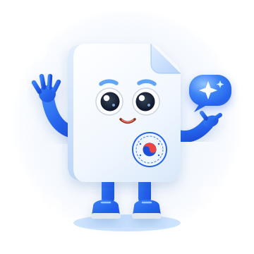

정책자금
운전자금과 시설자금, 정책융자와 보증 연계 정보를 살펴봅니다.
중소기업 · 소상공인 자금 상담
기업 상황과 자금 용도를 들려주세요.
검토할 자금 방향과 그 이유, 준비할 자료를 짚어드립니다.
프라임경영기술(주) · 중소벤처기업부 등록 중소기업상담회사 제2022-651호
경영지도사 기반 진단 · 협회 전문가 네트워크 · FDSS 분석과 AI 설명
기업 유형과 현재 상황을 알려주세요. 선택하면 상담의 진단 방향에 즉시 반영합니다.
대표님의 이야기가, 진단의 시작입니다.
무료 사전 진단
안녕하세요, 대표님!
옆자리 전문 상담사에게 물어보듯 편하게 말씀해 주세요.
어려운 서류나 공고 용어는 제가 쉽게 풀어서 안내해 드릴게요.
입력 정보는 현재 대화에 사용돼요. 주민등록번호 등 민감정보는 입력하지 마세요.
제공 문서 2026-11-01 기준 · 질문 표현 1,000개를 대표질문으로 연결합니다.
향후 3년 전체 계획을 만원 단위로 입력해 주세요. 같은 비용이 두 항목에 들어갔다면 중복 금액을 빼고 계산합니다. 입력값은 현재 화면에서만 사용됩니다.
프라임경영기술의 2027년 경영지원서비스 브로셔와 가이드북에서 상담 주제를 골랐습니다. 질문을 선택하면 정책이 상담과 보고서에 답변이 이어집니다.
신청 전 기관의 공식 공고와 첨부 지침에서 대상 업종·지역, 접수기간, 금리·보증료, 중복수혜 제한을 확인하세요. 예산 소진형 사업은 현재 접수 여부를 별도로 확인해야 합니다.
가이드북에 소개된 2027년 사업은 탐색용 참고자료입니다. 실시간 공고 자동수집과 담당자 검증을 거친 상품 추천은 준비 중입니다.
기업이 제공한 정보와 진단 규칙을 바탕으로 검토 방향과 근거를 정리합니다. AI는 결과를 이해하기 쉽게 설명하는 보조 도구이며, 자금 승인이나 신용등급을 결정하지 않습니다.
현재 입력 정보는 증빙 확인 전입니다. 외부 데이터 조회, NICE D&B 연계, 자료 업로드와 전문가 연결은 아직 제공되지 않습니다. 체납, 자본잠식, 거절 이력이나 복잡한 조달은 전문가의 별도 검토가 필요합니다.
내부 진단은 금융기관의 심사나 신용평가 등급이 아니며, 실제 자격과 승인 여부는 해당 기관의 최신 기준과 심사로 결정됩니다.
공공 마이데이터는 기업 증빙 확인, 정책 룰은 기관별 공고 확인에 사용됩니다. 두 정보는 구분해서 관리합니다.
현재 자동조회·서버 업로드 연동은 준비 중입니다. 직접 입력으로 계속할 수 있으며, 입력값은 자동조회 완료나 증빙확인으로 표시하지 않습니다.
자금의 목적에 따라
살펴볼 조건도 달라집니다.
매출이 들어오는 시기와 지출 시기가 다를 수 있어요. 자금 용도와 기존 대출부터 살펴보고 검토할 경로를 정리합니다.
공식 정보를 확인하고, 조건과 준비사항을 이해할 수 있도록 돕습니다.
운전자금과 시설자금, 정책융자와 보증 연계 정보를 살펴봅니다.
고용과 시설개선, 사업화에 필요한 지원 기회를 확인합니다.
국세와 지방세 등의 환급 가능성과 확인 절차를 살펴봅니다.
연구개발, 수출, 인증과 판로 등 기업을 위한 지원사업을 알아봅니다.
현재 정책자금 사전 상담을 제공하며, 지원금·환급금·지원사업의 개별 공고 탐색과 자동 확인 기능은 준비 중입니다. 지원 여부는 공식 공고와 심사를 확인해야 합니다.
모든 공고를 읽거나 서류부터 모으지 않아도 괜찮아요.
자금이 필요한 이유를 들려주세요. 기업 상황을 이해하는 데 필요한 질문부터 드려요.
기업의 강점과 확인할 조건을 정리해 검토할 수 있는 정책자금 방향을 안내해요.
추가로 필요한 자료와 준비 순서를 확인하고, 필요할 때 더 깊은 진단으로 이어가세요.
무료 상담은 지금 이용할 수 있습니다. 유료 진단은 출시 예정입니다.
바로 시작할 수 있어요
접수 후 영업일 1일 이내
접수 후 영업일 1~2일 이내
어떤 방향을 검토하고, 무엇부터 준비할지.
가상 기업의 예시 리포트로 먼저 살펴보세요.
기업 상황에 맞는 기관과 자금 유형
신청 자격, 제한 요건과 보완할 정보
필요한 자료와 다음 행동의 우선순위
가상 사례 · UI 검수용 — 아래 숫자와 전문가 검수 문구는 원문 샘플이며 실제 고객 진단·승인·전문가 검수 완료를 의미하지 않습니다.
기업 · 한식 음식점 / 개인사업자
진단상태 · 진행 가능
자료충족도 · 자료 충분
결과등급 · 무료
현재 진단 결론
• 현재 상태는 ‘진행 가능’으로 판단합니다.
• 이 결과는 현재 확인된 자료에 따른 사전진단이며 승인·실행금액을 보장하지 않습니다.
유리한 점
• 업력 1년의 창업기업이며 중소기업·창업기업 확인정보가 확인됩니다.
• 현재 체납·연체·신용이슈가 확인되지 않았습니다.
• 당해연도 예상매출이 전년 대비 약 15% 증가 흐름입니다.
• 대표자 연령·업력을 기준으로 청년 우대 가능성을 추가 검증할 가치가 있습니다.
주의할 점
• 대표자 개인신용평점이 690점으로 아주 여유로운 구간은 아니므로 민간신용·은행심사에서 보수적으로 볼 수 있습니다.
• 청년 우대는 실제 신청자금의 최신 공고가 해당 요건을 인정할 때만 반영됩니다.
지금 할 일
• MyData 확인값과 사업자 기본정보를 확정
• 대표자 개인신용 및 기존대출 최신값 확인
다음 단계 안내
• 기관 후보와 잠정 조달범위, 기본 신청순서를 확인하려면 19,000원 진단으로 진행할 수 있습니다.
• 현재 자료가 부족한 경우에는 결제보다 부족자료 보완을 먼저 안내합니다.
우리 회사와 비슷한 상황을 골라 보세요. 무엇을 확인하고 어떤 자료를 준비하는지 살펴볼 수 있어요.
자료 출처 · 가격대별 테스트 샘플 5선현재 공개된 실제 조달 사례는 없습니다. 실행 결과와 기업의 공개 동의를 확인한 뒤 익명으로 소개합니다.
운영사 제공 자료에 따르면 (사)한국중소상공인진흥협회 전문가 네트워크와 연계합니다. 재무·노무·특허·인증 등 분야별 검토가 필요한 경우 상담 범위를 먼저 확인합니다.
정책이와 대화하기 전에
자주 물어보시는 내용을 모았어요.
네. 기본 자격과 검토할 방향, 부족한 정보, 다음 행동을 무료로 안내받을 수 있어요. 지금 바로 이용할 수 있는 것은 무료 사전 상담입니다. 유료 진단은 제공 내용을 미리 확인할 수 있어요.
진단은 사전 검토를 돕는 안내예요. 승인 여부와 실행금액은 해당 기관 및 금융기관의 심사로 결정되며, 이 서비스는 승인이나 특정 금액을 보장하지 않습니다.
먼저 대화로 기업 상황을 확인해요. 자동조회는 이용기관 승인과 별도 동의가 확보된 경우에만 진행하며, 현재 화면은 직접 입력 기반 안내입니다. 확인하지 못한 자료만 이후에 보완하는 방식이에요.
바른 자금은 민간 진단·자문 서비스예요. 정책기관의 공식 접수창구가 아니며 기관별 최신 공식 공고와 심사 기준을 별도로 확인해야 합니다.